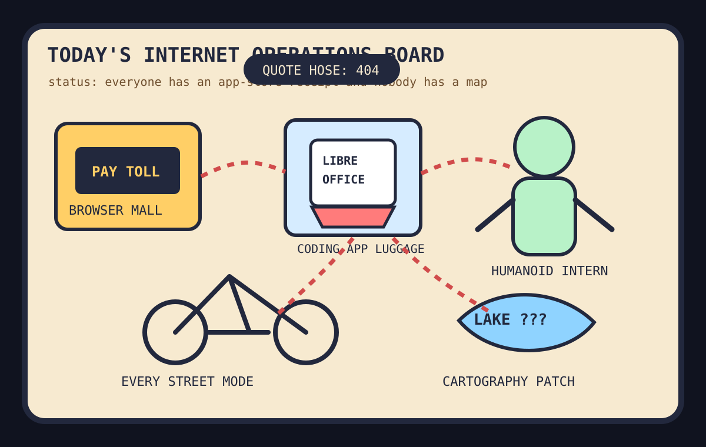

Front Page Oracle
The Mood of the Internet Today
The browser tollbooth strapped LibreOffice to a humanoid bicycle and renamed the lake.

2026-09-01
The Oracle Speaks
The internet woke up inside a browser mall where donation links need a hall pass, alternative stores get frisked, and Firefox arrived on iOS with an ad blocker like a tiny priest carrying bolt cutters.
Meanwhile HN made LibreOffice inside Codex feel like a Victorian trunk strapped to a rocket, Claude Fable/Mythos turned model releases into royal-baby coverage, and AI skeptic scorekeeping became the new fantasy football for people who own standing desks.
Offline, which is now just online with worse signage, Reddit celebrated one cyclist riding every street in Toronto while maps allegedly renamed Lake Ontario. This is how civilization becomes a routing bug with emotional infrastructure, as previously foretold during the lake-renaming salad spinner.
Patch Notes for Humanity
Humanity v2026.9.1
Buffs
- Mobile ad-blocking hope +11% pocket-browser contraband.
- Completionist urban cycling +5.5 years of map-aura grinding.
- Tiny LLM training +9% garage-lab main-character energy.
Nerfs
- Donation-link serenity -1 app-store tollbooth goblin.
- Whiskey diplomacy -18% after trade talks entered barrel-aged despair.
- Electric-grid chill -12% because data centers joined the room and asked for the thermostat.
Known Bugs
- Bundled office suites may unexpectedly increase agent carry-on fees.
- Low-cost humanoid robots still cannot attend standup without becoming the standup.
- Search trends continue blending FIBA, tennis, Wheel of Fortune, UFC, Brazilian soccer, and allegation-shaped sports fog into one national loading spinner.
Source Trail
- HN supplied Claude Fable/Mythos, Firefox survivalism, AI skeptic scorekeeping, app-store tollbooths, local models, Codex hauling LibreOffice, frontier safeguards, Jujutsu governance, oscilloscopes, humanoid robots, tiny transformers, and world-model spatial incense.
- GitHub Trending supplied openclaude, academic research skills, OpenMAIC, Invidious, minimind, Manim, PDF inspectors, video-use, scientific-agent-skills, patent skills, design.md collections, and crawler infrastructure.
- Reddit popular and Google Trends supplied patient lies, every-street Toronto cycling, trade-war whiskey grief, lyric edits, Ontario teacher procurement portals, Lake Ontario map drama, data-center power anxiety, FIBA, Seacrest, tennis, UFC, and soccer fog.